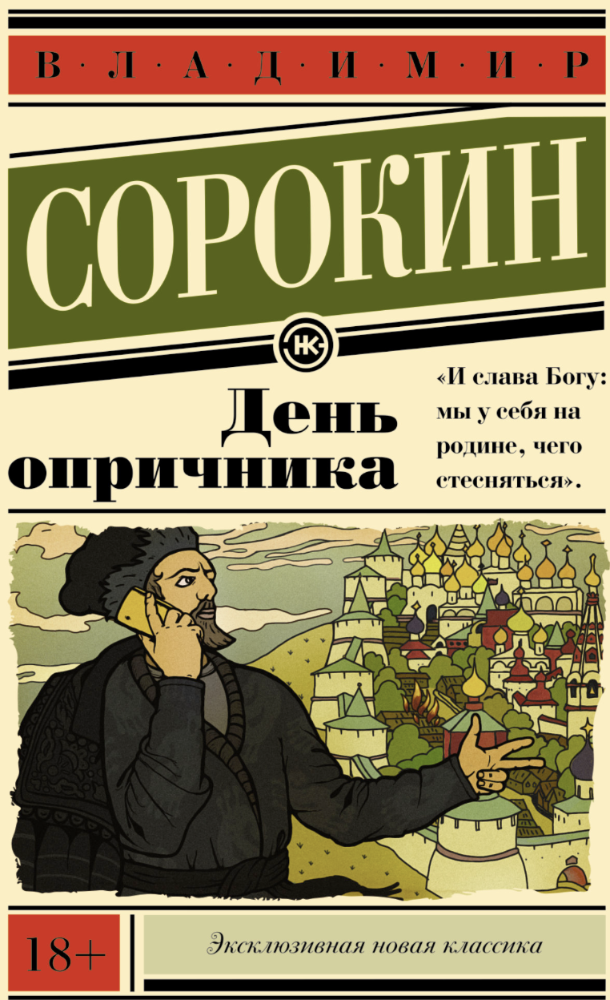

The most distinctive feature of Day of the Oprichnik by Vladimir Sorokin is its fusion of archaic language with futuristic dystopia.

Sorokin sets the novel in a technologically advanced 21st-century Russia that has reverted to an autocratic system modeled on the reign of Ivan the Terrible. What makes this especially striking is the language: characters speak in a stylized, pseudo-Old Russian idiom—full of церковнославянские echoes, ritualized phrases, and courtly expressions—while simultaneously using futuristic devices, drugs, and surveillance technologies. The result is a jarring temporal clash where past and future coexist unnaturally.
This stylistic hybrid does more than create atmosphere. It: (1) underscores the cyclical nature of Russian authoritarianism; (2) satirizes nationalist nostalgia for a mythic past